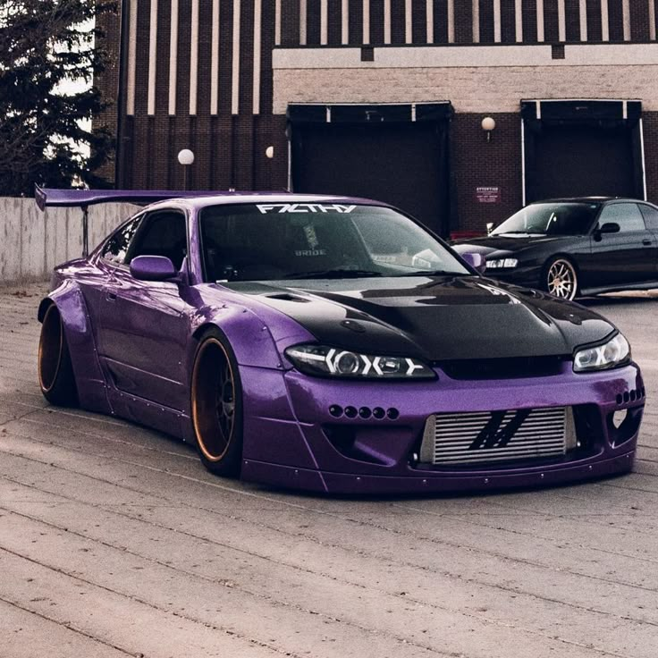

Customização de Body Kit


A customização de body kit envolve a instalação de peças externas que alteram a aparência e a aerodinâmica do carro.
Kits podem ser prontos ou personalizados, feitos em fibra de vidro, ABS ou carbono. A instalação requer ajustes e pintura.